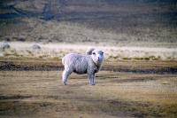
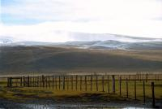
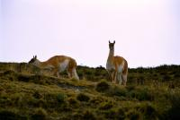
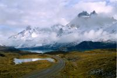

|
Dimanche 26 août
En route pour le merveilleux parc de Torres Del Païne. La piste qui y mène
nous fait traverser de grands espaces désolés de steppe aride. La luminosité
est superbe. Plus on s'approche du parc, plus les montagnes de Torres (les tours)
semblent grandir. On travers de estancias grandes à n'en plus finir. Une estancia
est une ferme d'élevage s'étendant sur des centaines d'hectares (5000 et plus).
Perdus au milieu et regroupés, on trouve le corral (espace cloturé de poutres),
un grand bâtiment pour les bêtes où se déroule la tonte des moutons, les communs
qui sont en fait la maison des employés, le garage et enfin la maison des patrons.
On y élève chevaux, mais surtout moutons et bovins, voire une nouvelle espèce
en création: guanaco (espèce de lama) croisé lama, pour la laine et la viande.
On rentre dans le parc et on descend vers Rio Serrano. Sur la route, le minibus
qui nous emmène mais qui en même temps est en train de faire un tour organisé
pour d'autres personnes fait de fréquents arrêts photos. Un lac, une chute d'eau,
des guanacos sauvages, des nandous (espèce d'autruche) et même un renard qui
s'est approché pour obtenir un peu de nourriture. Le bus nous dépose vers 13h00
au refuge du Rio Serrano. Là, on glane quelques informations aux gens de la
CONAF, l'organisme qui gère les parcs nationaux, et on picnique. Il est plus
de 14h00 lorsu'on part vers le refuge Pehoe, à 5 ou 6 heures de marche de là.
"heu, les gras, ça nous fait pas arriver un peu tard ça, le soleil se couche
vers 18h30 non?", "don't worry, be happy!".
Vers 18H30, après la traversée d'une plaine pleine de neige et sur des chemins
virtuellement balisés, on commence à se demander pourquoi l'autre CONAF de la
CONAF nous a laissés partir. Il a quand même eu la bonne idée de prévenir Manuel,
le gars qui bosse au refuge, de venir nous chercher. Il est ravi, ce n'est pas
du tout son boulot. Nous aussi on est ravi, on marche dans le noir et surtout,
si la première partie de la marche était du plat absolu, là ça monte, ça descend,
ça glisse, des flaques qu'on a presque envie de qualifier de lacs remplacent
les chemins. Nos pompes sont trempées, nos chaussettes nagent, et on n'y croit
presque plus lorsqu'au bout d'une heure et demie, on arrive enfin au refuge.
Un petit feu de bois et surtout une bouteille de rouge qu'on se trimballe depuis
le début de la marche, sont là pour nous réconforter. Et surtout, surtout, une
bonne platrée de pâtes!!!
On est au bout du monde, on a marché plus de 5 heures dans le parc déserté
par les touristes en cette saison et Heidi entend Manuel lui sortir: "Ha la
Heidi de las Alpas! avec ton grand père!". C'est juste la 227033ème fois qu'on
doit la lui sortir!
Lundi 27 août
Après une bonne nuit au refuge, il faut bien se lever et reprendre la route
sous le soleil. On découvre les superbes paysages qui nous entourent et le lac
qu'on a longé hier soir. Bref, finalement ce n'était pas si mal d'arriver la
nuit. Ca nous permet de faire de belles découvertes ce matin. A nouveau de grands
espaces, les prairies où on marche des heures sans voir l'impression d'avancer,
c'est irréel. Traces de puma dans la neige, renard, guanacos, nandous, troupeaux
d'oies sauvages (outardes rouges et oies antarctiques), chevaux, moutons tellement
recouverts de laine de la tête aux pattes qu'on dirait des pelotes, vaches rousses
et blanches, lièvres énormes, cygnes à cou noir et nombreux autres oiseaux on
a vu tout ça dans les étendues à perte de vue de la steppe et dans les superbes
montagnes.
A 15h00, on attend le minibus du retour. A 16h00, on est toujours dans la maison
des gardes, on téléphone. Ils nous ont oubliés... Ils arrivent dans 2 heures
qu'ils disent. A 20h00, on voit les phares d'une voiture. Gelés, crevés, affamés,
on arrive à 23h30 chez Alexandro. Trop tard pour le resto, on cuisine donc.
Purée steack précédés d'un bon apéro, on en a tous les 4 bien besoin.
Suite du voyage : Le fort de Punta Arenas
|

Chili
Torres del Paine
|

Chili
Torres del Paine
|

Chili
Torres del Paine
|

Chili
Torres del Paine
|
|
|